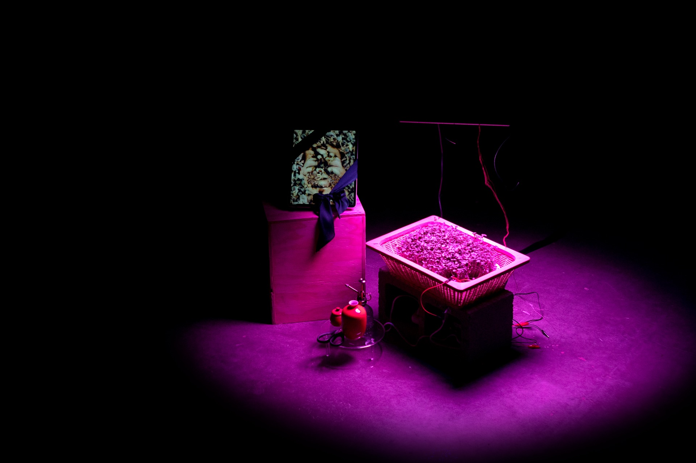
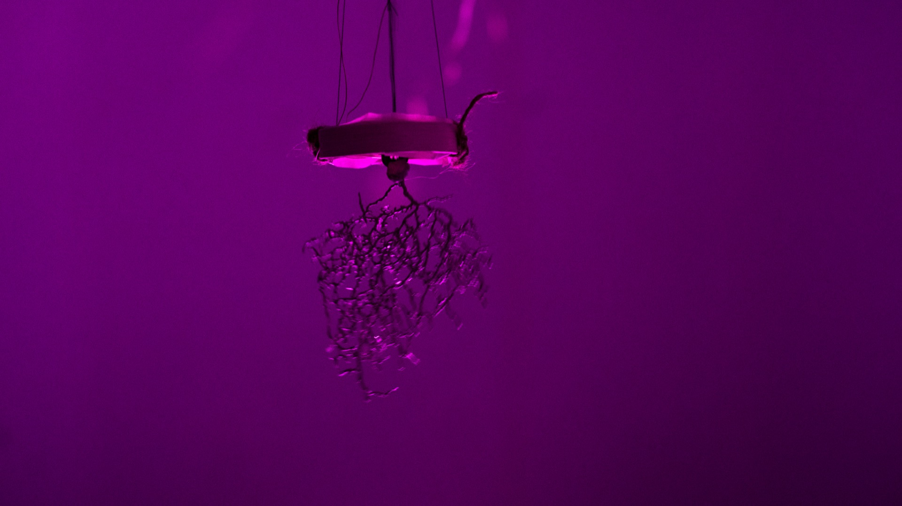
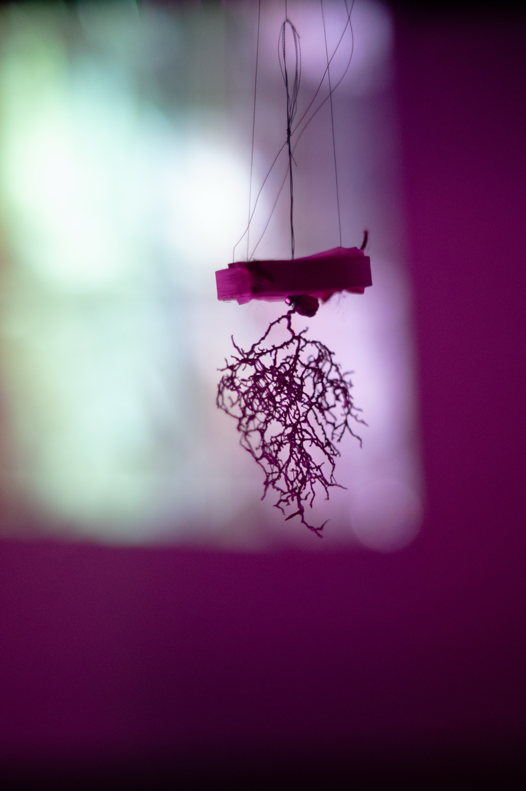
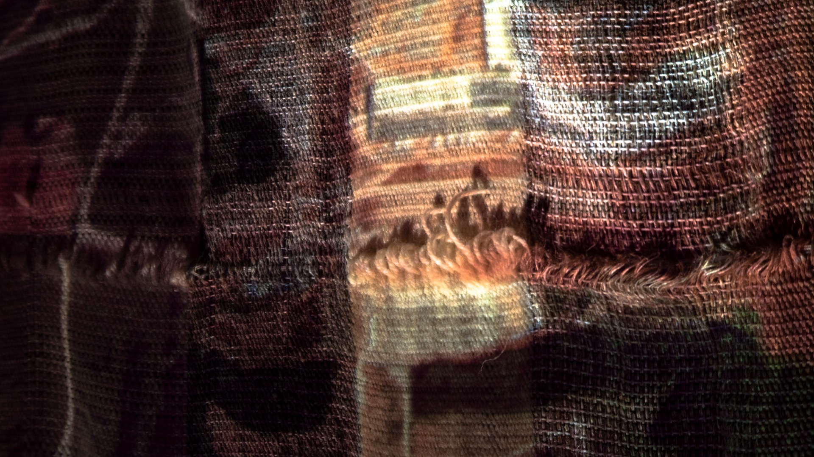
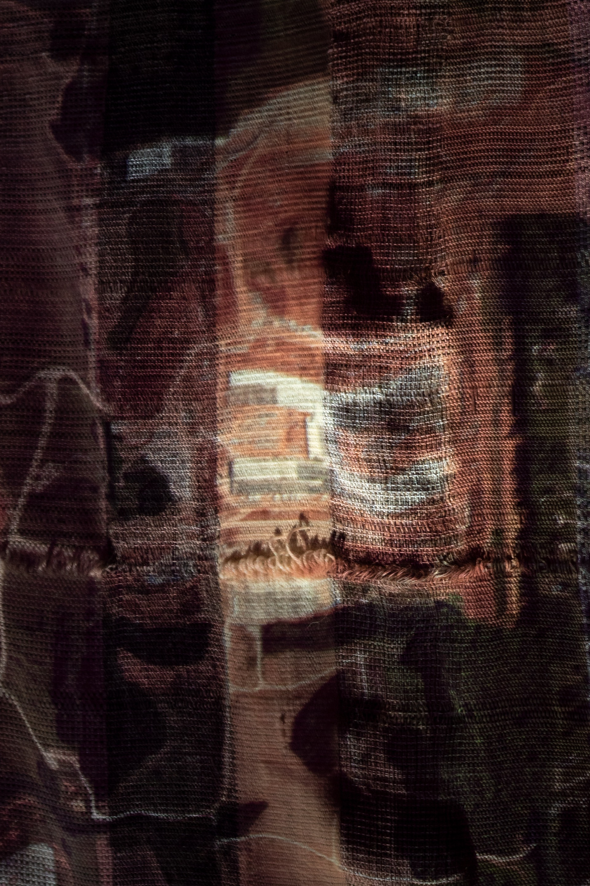

I Was Once Here, I Might Still Be
I Was Once Here, I Might Still Be (2022) is an installation examining death, remembrance, and the evolving landscapes of memory preservation through technologies like human composting, data storage, and social media. The work features interconnected sculptural vignettes, inviting viewers to explore the boundary between embodied experience and digital preservation. Central to the installation are a handwoven burial shroud, a human compost soil pot with microgreens, and a digital frame displaying morphing images of a human figure emerging from sprouts.
As human composting, a legal option in select U.S. states, reimagines our return to nature, this installation questions the sanctity and discomfort associated with such rituals. By contrast, digital memories, sustained by companies like Meta, live on indefinitely through posts, likes, and storage in remote data centers. These digital records, often perceived as proxies for lived experiences, complicate how we define and share meaningful moments.
The installation includes documents on composting services, guidelines for managing deceased users’ accounts, and Meta’s data center policies, situating the viewer within these contrasting spheres of physical decay and virtual eternity. Under magenta light, microgreens sprout from human compost, while sensors animate neuron sculptures nearby, evoking the fleeting yet perpetual cycle of life, death, and memory. This work confronts our urge to memorialize, challenging us to consider how we continue existing—biologically, digitally, or symbolically—after death.
{kind=link}

{kind=link}

{kind=link}

{kind=link}

{kind=link}
